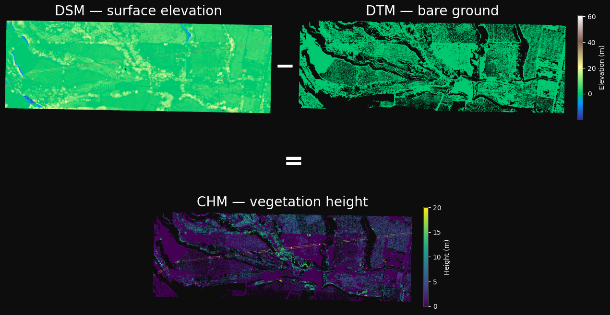
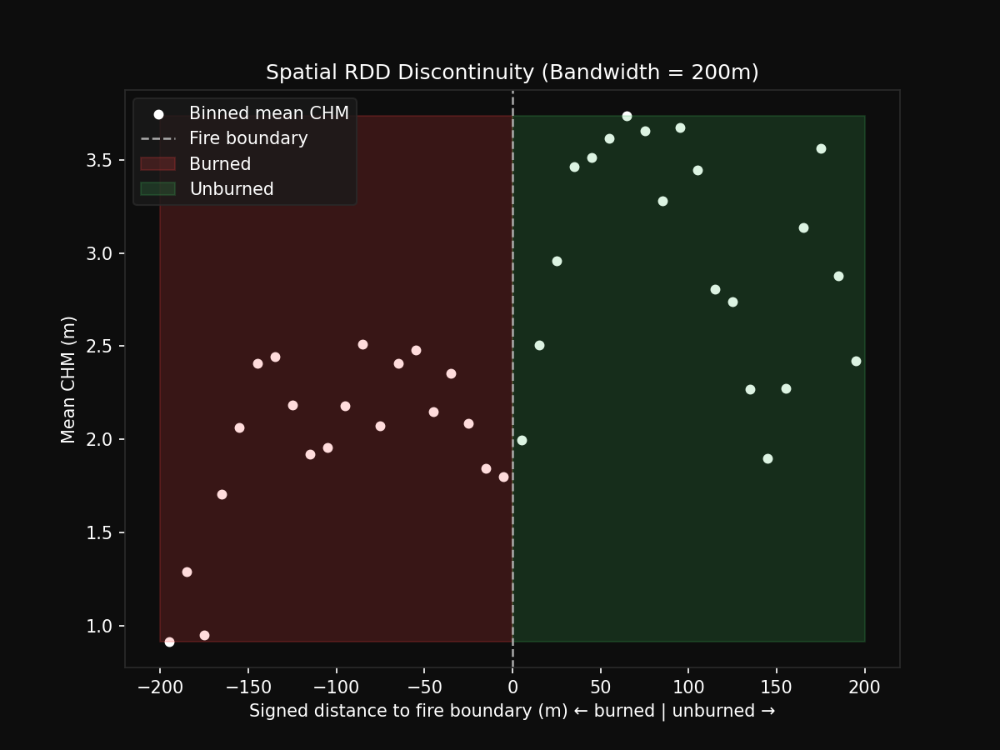

Vegetation encroachment is one of the leading causes of utility-related wildfire ignition in the western United States. Utilities are required under NERC FAC-003 to maintain minimum clearances between transmission infrastructure and vegetation, but inspecting hundreds of miles of corridor is expensive and labor-intensive. This project demonstrates how publicly available LiDAR data can be used to automatically identify vegetation clearance risks along a transmission right-of-way and validate results against an independent spatial control, using a 1 km² corridor near Fillmore, California.
The workflow was implemented as a reproducible Python pipeline using PDAL, GeoPandas, Rasterio, and ArcGIS REST services, allowing the analysis to be rerun on new LiDAR acquisitions with minimal manual intervention. It automates point-cloud normalization, canopy-height modeling, vegetation screening, and spatial validation from raw LiDAR inputs through final exceedance mapping.
On December 4, 2017, a fire ignited near Santa Paula in Ventura County and didn’t stop until it had consumed 281,893 acres. The Thomas Fire was ultimately linked to Southern California Edison electrical infrastructure, highlighting the broader wildfire risks associated with transmission and distribution systems. The fire burned for 40 days through the Los Padres National Forest and left a scar visible from satellite for years.
This analysis focuses on a tile just north of Fillmore, at the southern edge of Los Padres National Forest, where two Southern California Edison transmission lines cross the foothills: a 220 kV line to the north and a 66 kV subtransmission line to the south. Both corridors run directly through the Thomas Fire burn scar. Using a publicly available USGS LiDAR tile collected 4–6 months post-fire, the analysis does three things:
Derives a 1 m canopy height model (CHM) from a normalized LiDAR point cloud
Flags vegetation exceeding the FAC-003-4 clearance threshold within the right-of-way
Validates the CHM using the Thomas Fire burn perimeter as a spatial control
A note on timing: The LiDAR was collected May–July 2018, approximately 4–6 months after the Thomas Fire (December 2017). Vegetation inside the burn perimeter was suppressed at survey time, so detections here represent a conservative lower bound on current encroachment risk. Unburned areas have had another 8 years of growth since.
Before building the CHM, we confirm the raw tile matches the expected USGS specification. A density shortfall or wrong CRS would silently corrupt the raster output, and absent Class 2 ground points the DTM step has nothing to work from.
las = load_laz(raw_las_path)inspect_point_cloud(las)
Total points: 5578060
Classification distribution:
Class 1: 3317104 points
Class 2: 2256746 points
Class 7: 4198 points
Class 18: 12 points
Bounding box:
xmin: 320721.35000000003, xmax: 322478.14
ymin: 3810258.83, ymax: 3810871.84
zmin: 152.08, zmax: 378.18
Estimated point density (pts/m²): 5.179594625105056
Validate Coordinate Reference System
validate_crs(las, expected_epsg=32611)
True
All checks pass. Point count (5,578,060) and density (5.18 pts/m²) match the USGS specification. The bounding box (320721–322478 E, 3810258–3810871 N) confirms this is the correct study area tile. Class 2 ground points (2,256,746) are present from the USGS pre-classification, sufficient for the DTM step. CRS validates as EPSG:32611, matching the project coordinate system. The small noise classes (7 and 18) total under 4,300 points and will be filtered before rasterization.
Ground Classification and Height Normalization
Before we can measure vegetation height, raw elevation must be separated into ground and non-ground returns, then normalized to height-above-ground (HAG). This is done via a two-stage PDAL pipeline.
The first stage uses the Cloth Simulation Filter (CSF). Picture dropping a cloth from the sky over a forest. Instead, the cloth passes straight through the trees as if they weren’t there and settles on the bare ground below. Once the cloth comes to rest, the algorithm draws a simple rule: anything close to the cloth is ground; anything standing above it is not. Rigidness controls how much the cloth resists folding into tight terrain features. A stiffer cloth (higher rigidness) smooths over small bumps and is appropriate for gently rolling terrain; a looser one hugs every crevice, better suited to complex mountainous topography.
A rigidness of 2 is the default and still the right choice here: our study area is a chaparral foothill valley with smooth rolling hills.
The second stage runs hag_nn, which adds a HeightAboveGround dimension to every point by comparing its elevation against the nearest ground returns, giving us the height of each laser return above the local terrain surface rather than above sea level.
Although the raw tile arrived with USGS-classified ground points already present, we reclassify from scratch using a single consistent pipeline. That way, if any classification decision needs to be revisited, every step is traceable and justifiable, rather than hiding behind a black-box output from an upstream workflow.
Parameter
Value
Rationale
rigidness
2
Default; appropriate for sloped but non-mountainous terrain
slope_smooth
true
Post-processing to smooth cloth on slopes
HAG method
hag_nn
Nearest-neighbor interpolation from ground returns
The PDAL pipeline takes the raw data file as input to normalize heights and reclassify ground returns:
With the data confirmed, we can visualize the normalized point cloud colored by height above ground. Based on local knowledge of the area, vegetation here is predominantly younger citrus orchards and ornamental trees, with the occasional chaparral scrub plot, rarely exceeding 20 m. The visualization clips at 25 m, so any return approaching that ceiling is most likely a transmission tower rather than tree canopy.
The point cloud reveals tree clusters throughout the corridor. Transmission towers and lines appear as the bright yellow points near or at the 25 m clip ceiling, clearly distinguishable from the surrounding vegetation canopy below.
With the normalized point cloud confirmed, we rasterize it to derive the Canopy Height Model (CHM). The DTM (Digital Terrain Model) is computed from ground-classified returns (Class 2), interpolating bare-earth elevation with vegetation and structures removed. The DSM (Digital Surface Model) is rasterized from first returns, capturing the highest surface at each pixel: tree tops, rooftops, and tower structures. Subtracting the two (DSM - DTM) yields the CHM, the height of each surface feature above the local ground level.
Rasterize Normalized LiDAR Data
# Rasterize the point cloud to create digital surface and terrain modelsrasterize_to_dsm(normalized_las_path, resolution=1.0, output_path=dsm_path)rasterize_to_dtm(normalized_las_path, resolution=1.0, output_path=dtm_path)compute_chm(dsm_path=dsm_path, dtm_path=dtm_path, output_path=chm_path)# Load rasters of DSM, DTM, and CHM to visualize and prepare for corridor analysiswith rasterio.open(dsm_path) as src: dsm_data = src.read(1)with rasterio.open(dtm_path) as src: dtm_data = src.read(1)with rasterio.open(chm_path) as src: chm_data = src.read(1)
Visualize DSM, DTM, and CHM
import matplotlib.gridspec as gridspecimport numpy as npBG ="#0d0d0d"TEXT ="#ffffff"_valid_dsm = dsm_data[np.isfinite(dsm_data) & (dsm_data >-9990)]_valid_dtm = dtm_data[np.isfinite(dtm_data) & (dtm_data >-9990)]elev_min =min(_valid_dsm.min(), _valid_dtm.min())elev_max =max(_valid_dsm.max(), _valid_dtm.max())fig = plt.figure(figsize=(14, 9), facecolor=BG)# Top row: DSM (left) | DTM (right) — equal-width, symmetric about centergs_top = gridspec.GridSpec(1, 2, wspace=0.10, left=0.04, right=0.90, top=0.88, bottom=0.52)ax_dsm = fig.add_subplot(gs_top[0, 0])im_dsm = ax_dsm.imshow(dsm_data, cmap="terrain", vmin=elev_min, vmax=elev_max)ax_dsm.set_title("DSM — surface elevation", fontsize=20, pad=8, color=TEXT)ax_dsm.axis("off")ax_dtm = fig.add_subplot(gs_top[0, 1])im_dtm = ax_dtm.imshow(dtm_data, cmap="terrain", vmin=elev_min, vmax=elev_max)ax_dtm.set_title("DTM — bare ground", fontsize=20, pad=8, color=TEXT)ax_dtm.axis("off")cb_top = fig.colorbar(im_dsm, ax=[ax_dsm, ax_dtm], fraction=0.009, pad=0.02, location="right", label="Elevation (m)")cb_top.ax.yaxis.label.set_color(TEXT)cb_top.ax.tick_params(colors=TEXT)cb_top.outline.set_edgecolor("#444444")# Operator signs as figure text — centered in the gap between panels / rowsfig.text(0.457, 0.70, "−", fontsize=36, ha="center", va="center", fontweight="bold", color=TEXT)fig.text(0.47, 0.48, "=", fontsize=36, ha="center", va="center", fontweight="bold", color=TEXT)# Bottom row: CHM centered, same width as one top panelgs_bot = gridspec.GridSpec(1, 1, left=0.26, right=0.67, top=0.44, bottom=0.08)ax_chm = fig.add_subplot(gs_bot[0, 0])im_chm = ax_chm.imshow(chm_data, cmap="viridis", vmin=0, vmax=20)ax_chm.set_title("CHM — vegetation height", fontsize=20, pad=8, color=TEXT)ax_chm.axis("off")cb_chm = fig.colorbar(im_chm, ax=ax_chm, fraction=0.018, pad=0.04, label="Height (m)")cb_chm.ax.yaxis.label.set_color(TEXT)cb_chm.ax.tick_params(colors=TEXT)cb_chm.outline.set_edgecolor("#444444")plt.show()

Vegetation Clearance Detection
The CHM is clipped to a 15m buffer around the transmission line centerline and any pixel exceeding the 4.57m (15ft) height threshold is flagged and vectorized into polygon features.
A note on thresholds: The 15m corridor buffer and 4.57m height threshold are illustrative and used for the purpose of this exercise only. NERC FAC-003-4 Table 1 sets clearance minimums by voltage class; for 220kV lines the annual minimum is 4.57m (15ft), for 66kV subtransmission it is lower. Actual ROW widths vary by easement. A production analysis would pull these values from utility records before treating any detection as a confirmed exceedance.
Exceedances cluster in two zones: the chaparral foothills on the western side of the tile, where vegetation affected by the Thomas Fire was largely below the clearance threshold at survey time, and the eastern orchard block, where mature citrus encroaches on the 220kV ROW. The western corridor crossing the Thomas Fire burn scar shows almost no exceedances, consistent with the bare-ground CHM in that zone. The 66kV line to the south shows a thin scatter of exceedances; these should be interpreted with caution given the line-detection limitations discussed in the Reflection.
Buffer width
15m (50ft), illustrative, not from utility records
Height threshold
4.57m (15ft), FAC-003-4 annual minimum for 220kV; lower for 66kV
Exceedance polygons
1,547
Mean height
9.997m
Median height
5.81m
Max height
58.5m
Corridor Detection Pipeline and Exceedance Analysis
# --- Corridor Detection Pipeline ---# Commented out: outputs already computed and saved to disk.# Re-run if you change the buffer width, height threshold, or input CHM.# 1. Pull transmission line centerlines from the CEC ArcGIS REST API, clipped to the LiDAR tile extent# 2. Buffer each centerline by 15m (illustrative ROW width) to define the corridor of interest# 3. Clip the full-tile CHM to that corridor buffer# 4. Flag every pixel above the 4.57m clearance threshold and vectorize into exceedance polygons# Results saved to outputs/vector/flagged_trees.gpkg and outputs/tables/flagged_trees_summary.csv# url = (# "https://services3.arcgis.com/bWPjFyq029ChCGur/arcgis/rest/services"# "/Transmission_Line/FeatureServer/2/query"# "?outFields=*&where=1%3D1&f=geojson"# )# clipped_transmission_lines = load_corridor_centerline(url, normalized_las_path)# lines_with_buffer = buffer_corridor(clipped_transmission_lines, buffer_distance_m=15)# clip_chm_to_corridor(# chm_path=chm_path,# corridor_gdf=lines_with_buffer,# output_path=clipped_chm_path,# )# threshold_df = threshold_exceedance(# chm_clipped_path=clipped_chm_path,# height_threshold_m=4.57, # 15ft — illustrative, verify against FAC-003-4 for actual voltage class# )# # Save exceedance polygons and write summary stats# threshold_df.to_file(ROOT / "outputs" / "vector" / "flagged_trees.gpkg", driver="GPKG")threshold_df = gpd.read_file(ROOT /"outputs"/"vector"/"flagged_trees.gpkg")summary_df = threshold_df[["height_m"]].agg( count_exceedance_polygons=("height_m", "count"), mean_exceedance_height=("height_m", "mean"), median_exceedance_height=("height_m", "median"), std_exceedance_height=("height_m", "std"), )summary_df.to_csv(ROOT /"outputs"/"tables"/"flagged_trees_summary.csv")
Fetch Thomas Fire Perimeter from ArcGIS REST API
item_id ="a2926cffbc854806befacbf85ebc9b95"meta = requests.get(f"https://www.arcgis.com/sharing/rest/content/items/{item_id}", params={"f": "json"}).json()service_url = meta["url"]# Check field names first with resultRecordCount=1, then filter to Thomas Fireparams = {"where": "INC_NUM='00003583'","outFields": "*","f": "geojson","outSR": "32611"}query_url =f"{service_url}/0/query?"+"&".join(f"{k}={v}"for k, v in params.items())thomas_fire = gpd.read_file(query_url).to_crs(epsg=32611)
Interactive Map: Exceedance Polygons and Fire Perimeter
Exceedance polygons colored by height_m (plasma) over the fire perimeter. Pan, zoom, and hover in the interactive map. It loads when you scroll near it.
Validation: The Thomas Fire as a Natural Experiment
Before treating the exceedance detections as operationally meaningful, we need evidence the CHM is actually measuring vegetation correctly. The Thomas Fire provides a natural experiment: burned areas surveyed 4–6 months post-fire should be near-zero; unburned areas should show intact canopy. If that pattern holds, the CHM signal is reliable.
The 0.76m mean difference understates the validation signal. The median inside the perimeter is exactly 0.0m, meaning more than half of all burned-zone pixels registered zero canopy height, exactly what burned chaparral four months post-containment should look like. The mean is pulled upward by transmission infrastructure: the 220kV lattice towers cross the Thomas Fire perimeter multiple times, and their 37–49m returns drag the inside-perimeter mean toward 2m even when the surrounding terrain is bare. The 66.3% bare-ground rate (≤0.5m) is the most defensible summary statistic: two-thirds of pixels inside the perimeter registered near-zero canopy, consistent with a near-total burn event. The median difference of 1.23m and the bare-ground rate together confirm the CHM is measuring real vegetation structure, not sensor noise.
Inside burn perimeter
Outside burn perimeter
Mean CHM
2.003m
2.763m
Median CHM
0.0m
1.23m
% bare ground (≤0.5m)
66.3%
—
The Thomas Fire perimeter overlaps ~221,145 m² of the tile (~20% of total extent), with the perimeter edge running diagonally through the study area, giving both burned and unburned samples within the same tile.
RDD sensitivity results saved. Check for stability across bandwidths — flag if estimates vary by more than ~20%.
RDD Result
print(f"RDD estimate : {rdd_result['rdd_estimate']:.3f} m (negative = fire reduced height)")print(f"Std error : {rdd_result['se']:.3f} m")print(f"95% CI : [{rdd_result['ci_lower']:.3f}, {rdd_result['ci_upper']:.3f}]")print(f"Pixels in window: {rdd_result['n_pixels']:,} at bandwidth={rdd_result['bandwidth_m']}m")# Sensitivity across bandwidths (100, 200, 300m) — saved by spatial_rdd()sens = pd.read_csv(ROOT /"outputs"/"tables"/"rdd_sensitivity.csv")display(sens)# Binned discontinuity plot — saved by spatial_rdd()from IPython.display import Imagedisplay(Image(ROOT /"outputs"/"figures"/f"spatial_rdd_bandwidth_{rdd_result['bandwidth_m']:.0f}m.png"))
RDD estimate : -0.965 m (negative = fire reduced height)
Std error : 0.023 m
95% CI : [-1.010, -0.921]
Pixels in window: 440,120 at bandwidth=200m
Bandwidth (m)
RDD estimate (m)
Standard Error
95th Confidence Interval
5th Confidence Interval
Number of Pixels
0
50
-0.159480
0.038231
-0.084548
-0.234413
165383
1
75
-0.362112
0.034250
-0.294981
-0.429242
230074
2
100
-0.573387
0.030475
-0.513655
-0.633119
284594
3
150
-1.093089
0.025670
-1.042776
-1.143401
369259
4
200
-0.965478
0.022685
-0.921016
-1.009940
440120
5
300
-1.015558
0.019400
-0.977534
-1.053583
552984

To further validate the CHM, canopy heights immediately inside and outside the Thomas Fire perimeter were compared using a spatial regression discontinuity design. The estimated discontinuity at the fire boundary ranged from −0.97m to −1.09m across stable bandwidths, indicating substantially lower vegetation height inside the burn scar. The effect was statistically significant and correctly signed across all specifications, providing independent evidence that the LiDAR-derived canopy heights reflect real vegetation structure rather than sensor artifacts.
Number of exceedance polygons: 1547.0
Mean exceedance height: 9.997 meters
Reflection
This project demonstrates a scalable workflow for identifying vegetation-clearance risks using airborne LiDAR. Within a 1 km² transmission corridor, the analysis automatically identified 1,547 potential exceedance polygons and validated canopy-height estimates against an independent wildfire burn scar. While the thresholds used here are illustrative, the workflow mirrors the core components of operational utility vegetation-management programs: remote sensing, automated risk screening, geospatial prioritization, and regulatory compliance support.
The Thomas Fire validation supports treating these detections as real vegetation signal. Two-thirds (66.3%) of burned-zone pixels registered bare ground (≤0.5m CHM), and the median inside the perimeter is exactly 0.0m, consistent with a near-total burn event four months post-containment. The inside-perimeter mean (2.003m) is elevated by transmission tower returns; the median and bare-ground rate are the defensible metrics. The spatial regression discontinuity analysis provides stronger evidence that the observed difference reflects fire impacts rather than broad spatial trends: at 150m bandwidth the estimated jump at the fire boundary is −1.09m, significant and correctly signed. Exceedances concentrate in the eastern orchard block, where mature citrus encroaches on the 220kV ROW; the western corridor crossing the Thomas Fire burn area shows almost no exceedances, consistent with the near-zero CHM in that zone at survey time.
Limitations. Several constraints bound the operational scope of this analysis. The LiDAR was collected in 2018 and is now 8 years old; the 1,547 detections represent a conservative lower bound on current encroachment risk. The 15m corridor buffer and 4.57m height threshold are illustrative, not drawn from utility easement records or voltage-class-specific FAC-003-4 clearance tables. The Thomas Fire perimeter overlaps only ~20% of the tile, so the validation sample is partial and concentrated at the western edge; the eastern orchard zone has no fire-scar ground truth. LiDAR-based line detection is reliable for the 220kV lattice towers but degrades for the 66kV subtransmission line at 5.2 pts/m² density; exceedances along the 66kV corridor should be interpreted with caution.
Future work. A complete operational analysis would require:
Updated height data. This 2018 survey is 8 years old. A new 3DEP acquisition of the corridor would be preferred; GEDI or ICESat-2 could provide a recent canopy height snapshot at lower spatial resolution.
Voltage-class-specific thresholds. FAC-003-4 Table 1 clearance minimums vary by voltage class. A production analysis would pull buffer widths and thresholds from the utility’s actual easement records.
Operational prioritization. Future versions could rank exceedances by combining vegetation height, distance to conductors, terrain accessibility, fire risk, and asset criticality to support field inspection scheduling.
Multi-tile coverage. This 1.08 km² tile captures one corridor segment. The full SCE corridor runs tens of kilometers and would require tiling and mosaicking to assess at scale.
Comparison against inspection records. Ground-truthing LiDAR-flagged polygons against utility vegetation inspection records would establish detection precision and identify false-positive sources such as towers and rooftops.
Citations
Data
Citation
USGS 3DEP LiDAR
U.S. Geological Survey, 3D Elevation Program. SoCal Wildfires B3 2018 QL1 LiDAR. Accessed via The National Map.
CA Transmission Lines
California Energy Commission. Electric Transmission Lines. ArcGIS REST API. services3.arcgis.com/bWPjFyq029ChCGur
Thomas Fire Perimeter
CAL FIRE. California Fire Perimeters. ArcGIS REST API, item a2926cffbc854806befacbf85ebc9b95
NERC Standard
North American Electric Reliability Corporation. FAC-003-4: Transmission Vegetation Management. 2016.
 Image credits:
Image credits: